Each mechanic shows its main idea first. The rules, the technical details, the history (when it appeared and changed) and the bugs found along the way fold open below it.
- Sessions
- Recent hosts
- Host addresses
- Movement and camera
- Controls and devices
- Items and delivery
- The shared objective
- Health and hazards
- Checkpoints
- Menus and the HUD
- The pulse
- Joining late and starting over
- Updates and versions
Sessions: Solo, Host, Join, Server since v0.1.0
A session is one computer acting as the server, plus up to four players. Solo is a session only you are in; Host lets friends join you; Join connects to a host's address; Server runs a session with no player of its own.
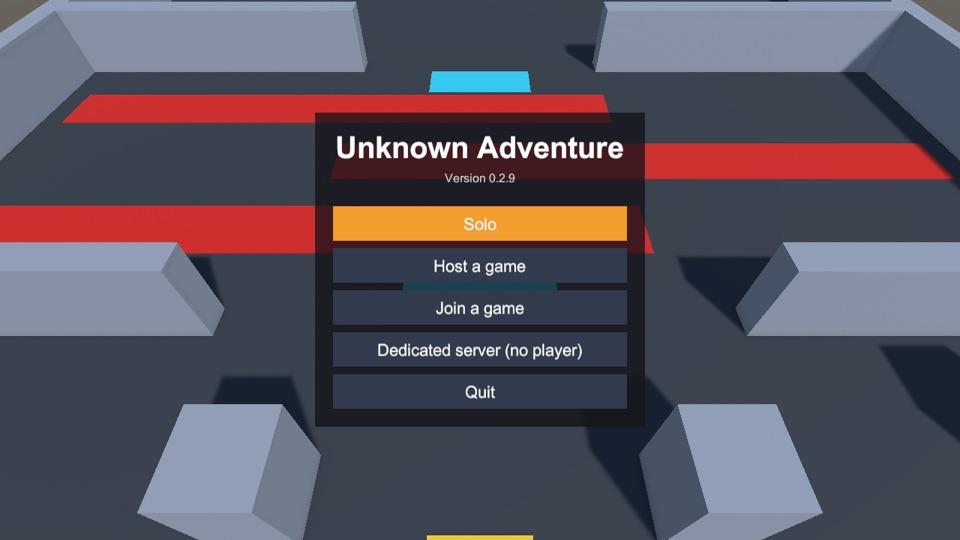
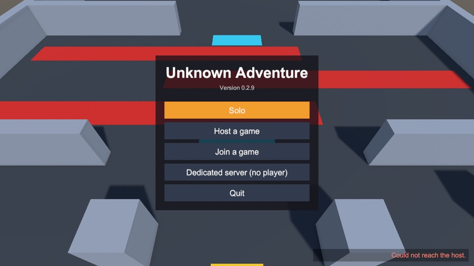
Rules and numbers
- Up to 4 players per session; one computer (the host or the server) is the authority.
- Solo is a host that listens on your own computer only, so nobody else can connect. It follows exactly the same rules as multiplayer.
- Join needs the host's address. The port is UDP 7770.
- Everyone must run the same version. Otherwise the host refuses with “Incompatible game version. You have X; the host has Y.”
- Failures are explained: Could not reach the host (wrong address, host not started, firewall), Could not start the server (the port is already in use).
- The state button reads Offline, Starting, Hosting, Serving, Connecting or Connected, and folds the panel away.
How it works
The host's computer decides everything that matters: movement results, who holds the ball, cooldowns. Clients send what the player wants and draw what the server says. Solo uses the same code, so single-player and multiplayer cannot behave differently.
Technically: FishNet over the Tugboat UDP transport. When a client connects, the server checks its version and answers before disconnecting a client that does not match.
History
- v0.1.0 2026-11-03 Solo, Host, Join, Disconnect and the version check.
- v0.2.0 2026-11-03 Dedicated server mode (the
-serverswitch). - v0.2.2 2026-11-04 The state label became a button that folds the panel away; a Server entry was added to the menu.
- v0.3.0 2026-11-03 A new main menu, pause menu and results screen that work with a controller; the connection status moved to a bar at the bottom right that never shows information about a previous session.
Bugs and fixes
Recent hosts since v0.2.2
The game remembers the last three hosts you joined, so connecting again takes two clicks.
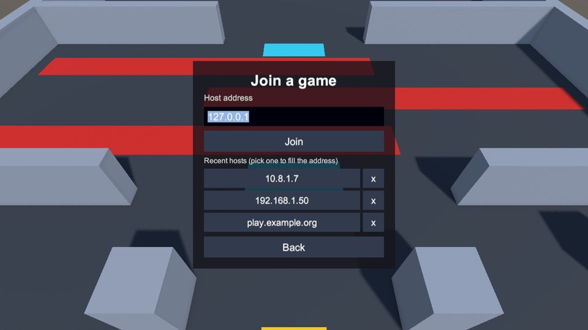
Rules and numbers
- An address is saved only after you connected successfully.
- Newest first, at most three; joining an old host again moves it to the top without a duplicate.
- Clicking an entry only fills the field: you still press Join.
- The x deletes an entry.
- Only letters, digits and
. : - _are accepted, so nothing odd is stored. - The list is stored on your device in the game's preferences. It survives updates and is never sent anywhere. Automated (headless) runs never save to it.
How it works
The list is plain logic in the Net library (RecentHosts), tested on its own: ordering, the limit of three, deleting, refusing odd text, and a save-and-load round trip. The game stores the text form in Unity's PlayerPrefs.
History
Bugs and fixes
No known problems.
Host addresses since v0.2.1
When you host, the game lists every address friends can use, labelled by kind, with a Copy button for each.
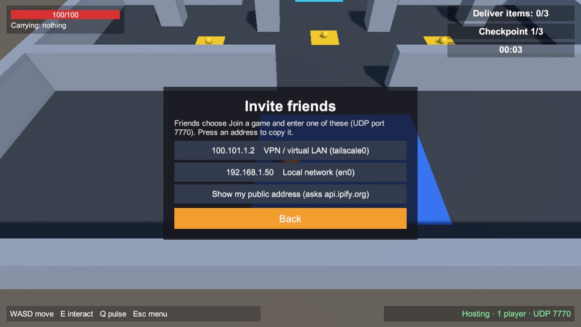
Rules and numbers
| VPN / virtual LAN | Tailscale, ZeroTier, Hamachi, WireGuard. Best for friends in different places. |
| Local network | Your home or office network: for people on the same Wi-Fi or cable. |
| Virtual machine or container | Shown for completeness; rarely useful to friends. |
| Public | An address assigned directly to this computer. Behind a normal router, use the button below. |
- Show my public address asks api.ipify.org only when you press it, which tells that service your address.
- A public address only works if your router forwards UDP port 7770 to your computer. Behind a VPN or proxy it shows that service's address instead.
- Only IPv4 addresses are shown; the list refreshes every 10 seconds.
How it works
The game reads the computer's network interfaces and sorts each address by rules: private ranges (10/8, 172.16/12, 192.168/16) are local, 100.64/10 is the range Tailscale uses, interface names such as tailscale, zt, wg, utun mean VPN, names such as docker or vmnet mean virtual. Loopback, link-local and multicast addresses are never shown. 21 known cases are checked automatically, including the exact edges of each range.
History
Bugs and fixes
wlan0) and Windows adapter names are based on naming conventions and have not been checked on those systems.Movement and camera since v0.1.0
You move with WASD or the left stick, relative to the camera. Your own character reacts instantly, even online.
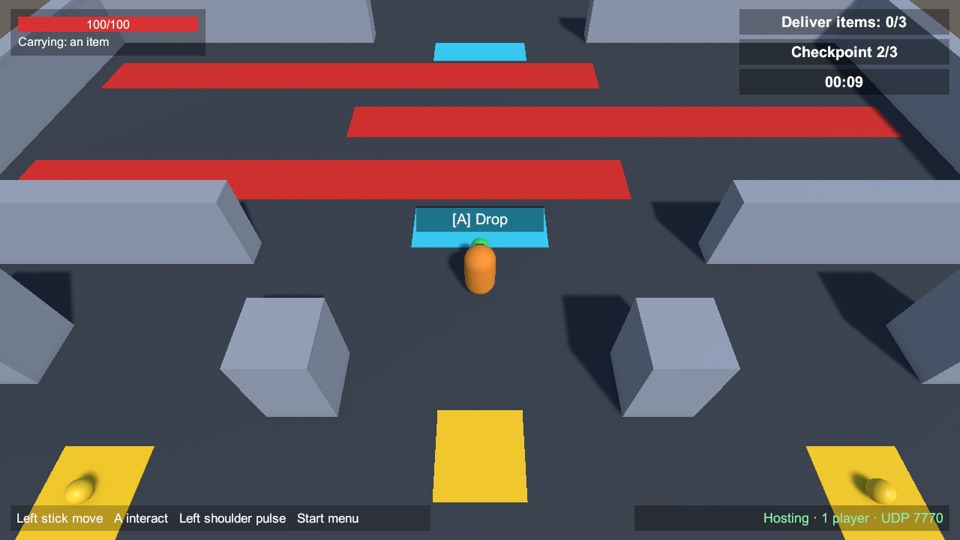
Rules and numbers
- “Up” on the screen is away from the camera, whatever direction the camera faces.
- Diagonal movement is not faster than straight movement.
- Walls and obstacles stop everyone at the same place.
- Other players' characters are drawn where the server says they are.
How it works
Your computer moves your character at once (prediction), the server runs the same movement from your inputs and corrects you if the two ever disagree. Movement uses Unity's character controller driven by FishNet's prediction, ticking 30 times a second.
Tested: after settling, client and server positions agreed to 0.000 m on a clean network and with 100 ms latency and 5% packet loss, including walking into a wall and corrections pushed from the server.
History
- v0.1.0 2026-11-03 Movement with prediction, the follow camera, obstacles.
- v0.3.0 2026-11-03 Units turn toward the way they move and show it with a dark nose; the camera glides after the player and cuts away walls in its way; the arena became the Courier Route level.
- v0.3.1 2026-11-04 The character and the camera move evenly between network ticks; the camera cuts away only walls clearly between it and the player, not walls beside or behind you.
- v0.3.2 2026-11-04 The character no longer trembles; it speeds up and slows down instead of starting and stopping at once; the camera follows like a spring, easing in and out; the hint stays steady; other players move more evenly.
Bugs and fixes
No known problems. The art is placeholder, and the character does not show which way it faces yet.
Controls and devices since v0.1.0
Keyboard and mouse or a gamepad: the game follows whichever you touched last. A box at the bottom left always shows the controls.
Rules and numbers
| Move | WASD / left stick |
| Interact (pick up; tap to drop, hold to throw) | E / gamepad A |
| Pulse (1 s cooldown) | Q / left shoulder |
| Pause menu | Esc / gamepad Start |
Sticks have a 20% dead zone. The start menu is clicked with a mouse (on a Steam Deck, use the touchscreen or trackpads).
How it works
A small input layer turns every device into the same intent: where you want to move, where you aim and which buttons are held, all in world space. The game and the server only ever see intents, never keys, so bots and tests can play too. Aiming from the stick or the mouse exists but nothing uses it yet.
History
- v0.1.0 2026-11-03 Keyboard, mouse and gamepad movement.
- v0.2.0 2026-11-03 E / A and Q / left shoulder added, with hints on screen.
- v0.2.2 2026-11-04 The hints moved to a box at the bottom left that is always visible, with the live state of the ball and the pulse.
- v0.3.0 2026-11-03 E / A now means Interact (pick up, drop); Esc / Start opens the pause menu; the hints follow the device you use; menus work with a controller.
Bugs and fixes
No known problems.
Items, carrying and delivery since v0.2.0
Gold items lie on the yellow spots. Walk up to one, press Interact to pick it up and carry it to the green pad. Put it down there (a tap of Interact lets go of it) and it counts; hold Interact for half a second instead to throw it. You carry one item at a time, and it hangs in front of you.
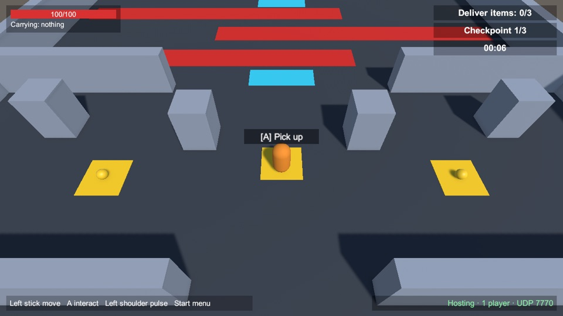
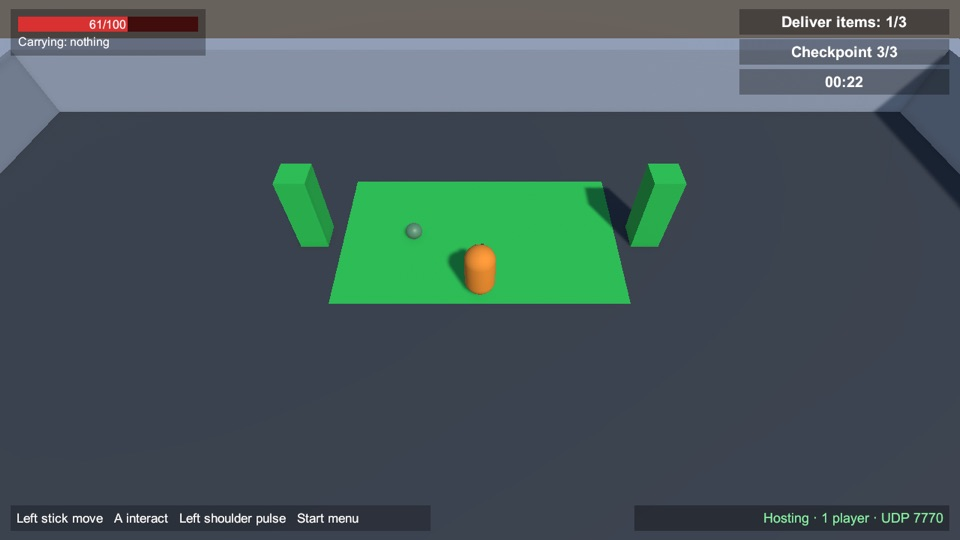
Rules and numbers
- Target. With a mouse, what the pointer is over, within reach; with a controller (or when the pointer is over nothing), the nearest thing in front of you, inside a cone of 70 degrees. Reach is 2 metres from the middle of the item (the prompt shows a little inside that), and a wall in between blocks it. Only a free item is offered, and only when your hands are empty.
- Interact. With empty hands it picks up the target item. While carrying, a tap lets go of the item and holding it for half a second throws it about 6 metres the way you face. A throw needs 5 seconds to recharge (the hint counts it down); while it recharges, holding only drops.
- One at a time. A second pickup with full hands is refused.
- A carried item hangs 0.9 metres in front of the player at chest height. A dropped or thrown item is a small ball: it falls, bounces and rolls to a stop, and one dropped while you walk keeps half your speed, so it rolls on.
- Players walk through items; items can be picked up even from inside the green pad.
- An item lying on the pad counts; a held one never does. A ball that leaves the map goes back to where it started.
- A player who leaves, or dies, lets go of the item where they stand.
How it works
Players only ask; the server decides. It keeps who holds each item and where each one rests, and every computer draws the items from that, so simultaneous requests for one item always produce exactly one holder and a drop looks the same for everyone. Which target is highlighted is worked out locally; what happens is decided by the server.
History
- v0.2.0 2026-11-03 Introduced as one shared gold ball: pick up, carry, drop; exactly one holder.
- v0.2.2 2026-11-03 Fix: a dropped ball is drawn at the same place for everyone.
- v0.3.0 2026-11-03 Three items, one carried at a time, target selection with a highlight and a prompt, the green delivery pad; items are held and dropped in front of the way the player faces.
- v0.3.3 2026-11-04 The green pad is a zone that counts the items lying in it (no Deliver press, and an item can be taken out again); balls are physical and roll; a tap drops, holding half a second throws (5 s recharge); a ball that leaves the map goes back to its start.
- v0.3.1 2026-11-04 The prompt appears only within the real pickup range; nothing can be picked up, delivered or dropped through a wall; the held item and the hint follow the smoothed character.
Bugs and fixes
The shared objective and the timer since v0.3.0
Everyone plays towards one goal: get three items onto the green pad. The counter at the top right shows how many lie there, the same for all players, and a timer shows how long the run has taken. When the last one lies on the pad, the route is complete.
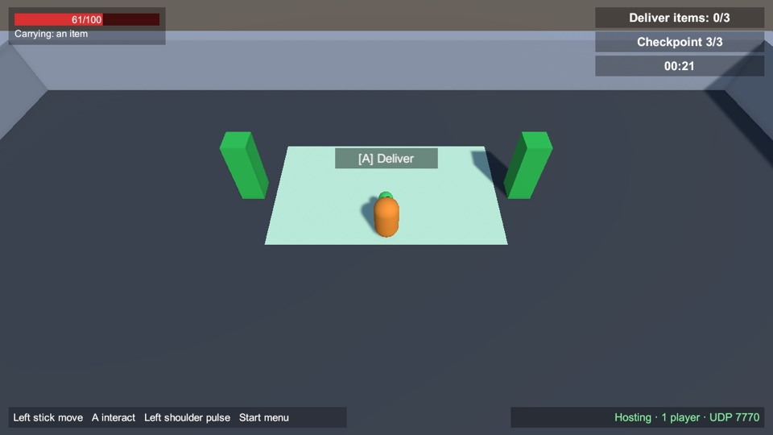
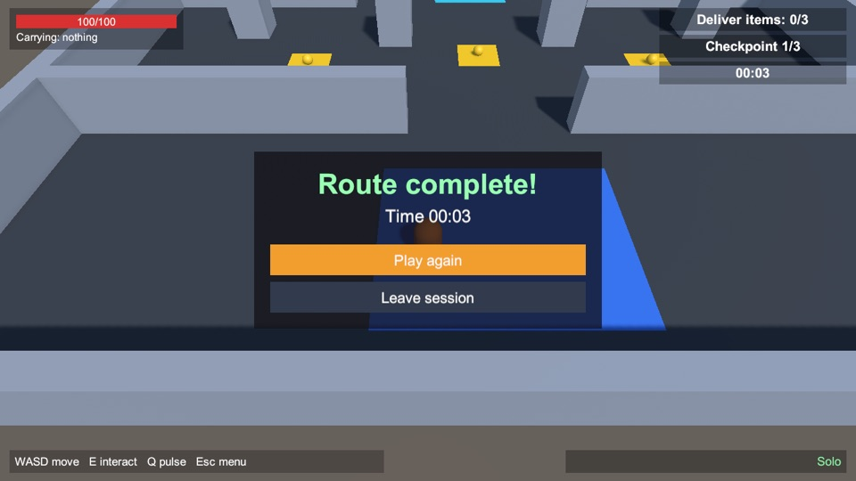
Rules and numbers
- The objective needs as many items on the pad as there are items (three); taking one off lowers the count until the run is finished, then the result stays.
- The counter is the same for every player, also for someone who joins during the run.
- The timer starts with the run, stops when the objective is complete and starts again with every new run.
- On completion everyone sees the results screen. Play again is for the host; the others wait for them or leave.
How it works
The server keeps the objective (how many are needed, how many are done) and every computer draws it. The pad is a zone the server checks every physics step: an item that lies in it counts, one taken out counts out. The run finishes once, and the timer counts server ticks so every player sees the same time.
History
- v0.3.0 2026-11-03 Introduced: the shared objective, the run timer and the results screen.
Bugs and fixes
Health, hazards and falling since v0.3.0
The red strips hurt. Standing on one costs health every second; at zero you are down, you let go of what you carry, and after a few seconds you come back at the latest checkpoint with full health.
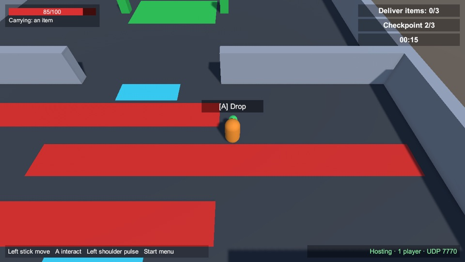
Rules and numbers
- Health is 100. A hazard costs 25 a second (a first guess for the playtest), and stops the moment you step off it.
- When you are down you cannot move or pick things up, you have no interaction target, and you are drawn grey. The screen says how long until you are back.
- You come back after 3 seconds at full health on a spawn point of the team's checkpoint, the one with the most room around it.
- What you carried is dropped where you fell and can be picked up by anyone.
How it works
The server owns health. Hazards, death and respawn are all decided there and copied to every player, so everyone sees the same moment of falling and returning. A dead unit's input is ignored on the player's own computer and again on the server.
History
- v0.3.0 2026-11-03 Introduced: health, hazards, falling, dropping what you carry, and coming back at a checkpoint.
Bugs and fixes
Checkpoints and starting a run again since v0.3.0
The cyan pads are checkpoints, each with a flag. When any living player steps onto one that is further along the route, it becomes the team's checkpoint and anyone who falls comes back there. A new run starts again at the beginning, without anyone leaving the session.
Rules and numbers
- The route has three: the start and two more. The top right shows which one the team is at (for example Checkpoint 2/3).
- It is reached by stepping onto its marked pad (not by being near it); progress only moves forward. A grey flag, low, means it is still ahead; a green flag, raised, with a bright border, is where the dead come back; a dark green one has been passed.
- Restart run (pause menu, host only) or Play again (results) starts a new run: items go back, the objective, timer and checkpoint reset, everyone returns to the start with full health.
How it works
The server keeps how far the team has got and which spawn points are in use; a new run first returns to the start checkpoint and then puts players there. Three runs in a row, with restarts between them, are part of the automatic tests.
History
Bugs and fixes
No known problems.
The pulse since v0.2.0
A short ability on a one-second cooldown. It exists to show that timing rules are decided by the server, not by whoever presses fastest.
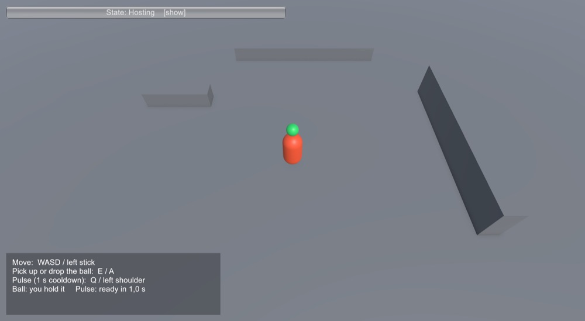
Rules and numbers
- Q / left shoulder fires the pulse; your character flashes orange for 0.3 seconds on every screen.
- The cooldown is one second. Pressing during the cooldown does nothing.
- Only the owner can fire their own pulse.
How it works
The cooldown is counted in server ticks (30 ticks is one second), so it does not depend on anyone's frame rate or connection. A client asks, the server accepts or refuses and answers, and an accepted pulse is broadcast to everyone.
Tested: two requests in the same tick give exactly one accept; a request during the cooldown is rejected and accepted again after it; others see the effect once; nobody can fire someone else's pulse; a new session starts with a fresh cooldown.
History
Bugs and fixes
Joining late and starting over since v0.1.0
You can join a session that is already running and see its current state at once. Ending a session leaves nothing behind.
Rules and numbers
- A player who joins late sees the others, the ball (held or lying, and where) and the pulse cooldowns as they are now.
- Leaving and coming back works repeatedly.
- Ending the session removes every object. The next session starts fresh: a free ball and a ready pulse.
How it works
The server sends the current shared state to every new player. When a session stops, every spawned object is removed. Tested: a late joiner receives exactly the live objects (not one that was removed before it arrived), current values and a predicted character that keeps tracking live; after a full stop no ball or player object survives, and the next session starts with a free ball and a fresh cooldown.
History
Bugs and fixes
No known problems.
Updates and versions since v0.1.0
The installer keeps the game up to date, keeps the previous version for going back, and starts the game. Details are in the user guide.
Rules and numbers
- Every download is checked for size and a SHA-256 hash before it is installed; a bad one is discarded and your installed version is untouched.
- The two newest versions stay on disk, so going back is instant.
- Starting from the launcher (or Steam Deck Gaming Mode) updates first, and starts the version you already have if the update cannot be done.
- Players on different versions cannot join each other, and are told so.
How it works
Releases live on GitHub; the installer is a small script that needs only standard tools. The game's version number is also its network-compatibility number.
History
Bugs and fixes
curl, its menu did not appear and it simply installed and launched. It now reads the keyboard from the terminal. The installer files on the release were replaced.